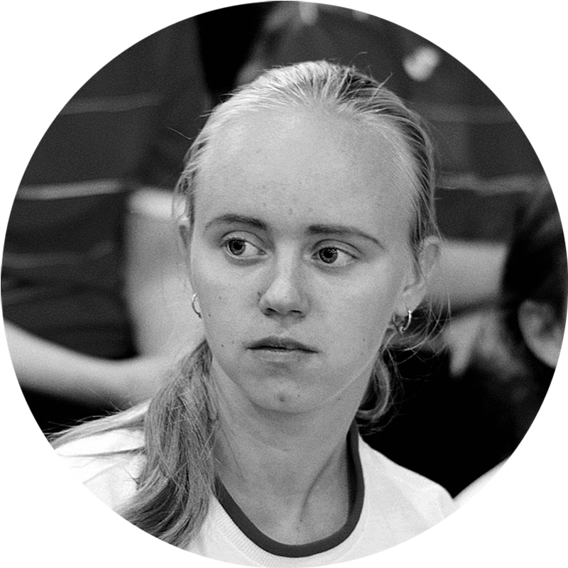
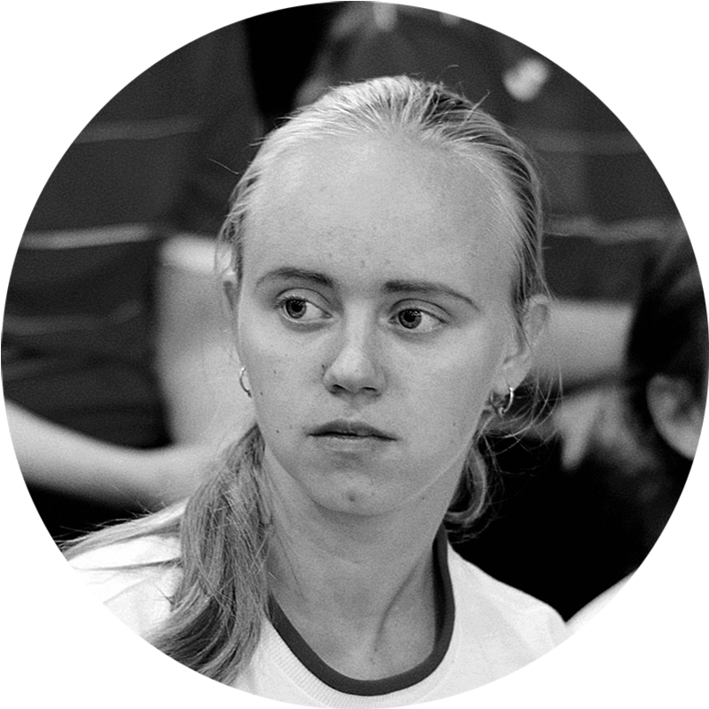

ИВАНОВСКИЙ
ГОСУДАРСТВЕННЫЙ
УНИВЕРСИТЕТ
2021 STUDENЬ
КАРАНТИН
#
НА ЗАМОК
ПОЛИНА И КРИСТИНА
/ 25.10.2021
ЗАПЕР


 


О НАБОЛЕВШЕМ
Большинство людей уже забыли о временах
без ограничений и постоянной
эпидемиологической ситуации в стране. Из-за
внедрившейся в нашу жизнь в конце 2019 года
болезни Covid19 уже 5,5% населения потеряли
работу. С одной стороны, этот процент кажется
маленьким, но число, составляющее
потерявших работу тождественно 8.000.000
человек, и вот это число пугает.
Но в этой статье хотелось бы поговорить именно о
предоставлении жилища для иногородних/иностранных
студентов и о политике общежитий на время эпидемии
Школьники и студенты, не понимая какой балласт образования они
теряют, переходя на дистанционное обучение – радуются, ведь у них
появляется больше времени для деградации, работы, отдыха, и все
учащиеся уже настолько привыкли к дистанционной форме
обучения, что очные занятия кажутся экзотикой.
Заходя издалека, наша команда собрала сведения
о закрытии общежитий на локдаун, о том, как
повели себя студенты и что происходило в то
время. Среди нас, журналистов второго курса,
есть те, кто проживает в общежитиях
университета и прошли испытание карантином.
Кому-то даже «посчастливилось» из девяти учебных недель
сентября и октября провести в состоянии ожидания открытия
крыла аж все шесть. Конечно, до этого уже закрывали крылья, но
прошедшие два месяца отличились необычайной частотой. За
это время в общежитии ИвГУ №1 на Тимирязева позакрывали
поочередно шесть крыльев из восьми.
А в третьем общежитии на Смольной от коменданта 3-го
общежития Рыбаковой Татьяны Юрьевны мы получили
информацию о студенте, который в 2020 году, когда эпидемия
начала разрастаться, выпрыгнул с окна второго этажа, чтобы выйти
на свежий воздух. Из-за того, что в апреле 2020 года в 3-м
общежитии ИВГУ случилась вспышка коронавируса, и заболели
сразу несколько студентов, жилищный отдел решил закрыть
общежитие без возможности выйти оттуда даже в магазин.
От студентов, проживающих в 3-м общежитии сейчас, удалось
узнать, что во время локдауна общежитие открыто, студенты не
ограничены в приезде и узде оттуда, однако, как сказала комендант,
в любой момент может поступить распоряжение о закрытии
студенческого жилища, в таком случае студенты, не имеющие
возможности уехать домой, будут вынуждены сидеть взаперти.
С уверенностью могу сказать, что
здесь дело не только в несоблюдении
элементарных антиковидных мер, но
и в эгоизме, неуважении своих
соседей. В этом убедились жители
многострадального пятого этажа
большого крыла первого общежития.
На нашу долю выпал первый карантин, затянувшийся на 4 недели,
и второй двухнедельный, начавшийся ровно через неделю после
окончания предыдущего
1
2
3
Стоит сесть и продумать варианты, расценить
целесообразность отъезда или решения отсидеть карантин в
общежитии. И уже только потом обсудить этот вопрос с тем, кто
умеет ставить себя на место другого человека (очень важно
для сохранения и так находящихся под угрозой нервов).
Если вы всё же решили выпорхать куда подальше, то
расцените свои затраты на проживание, посоветуйтесь уже с
бывалыми «отшельниками». Помните при этом, что обещанные
две недели карантина могут оказаться всеми четырьмя.
Поздравляю, вы на свободе. Ловите романтику жизни на
отшибе и прочувствуйте все прелести симулятора бомжа.
Подводя итог, студентам, проживающих в общежитиях, приходится
очень трудно во время эпидемиологической ситуации в стране,
ведь они остаются взаперти и не получают информацию извне, на
какой срок их закрыли.
Каждый из тех, кто оказывался перед выбором остаться под замком в
крыле или уехать куда глаза глядят, реагировал по-разному в
зависимости, как правило, от своей внеучебной деятельности. Как
человек, переживший вне стен общежития упомянутые выше два
карантина подряд, могу посягнуть на то, чтобы дать пару практичных
и психологических советов.
Ивановский государственный университет предоставляет студентам
три общежития. При каждом есть комендант и вахтерши,
наблюдающие за порядком общежития. Но за расселение и за
состояние комнат отвечает жилищный отдел и проректор по
социальному развитию Сорокин Никита Дмитриевич.
Немалой части студентов ИвГУ первые месяцы учёбы в текущем
учебном году запомнились не сколько очным посещением занятий в
вузе, сколько заточением на этаже, временным размещением за его
стенами на период карантина в крыле общежития или же
двухнедельным дистанционным обучением всей группы.
ИВАНОВСКИЙ
ГОСУДАРСТВЕННЫЙ
УНИВЕРСИТЕТ
2021 STUDENЬ
ПОЛИНА И КРИСТИНА
/ 25.10.2021
ИЗОБРАЖЕНИЯ С: